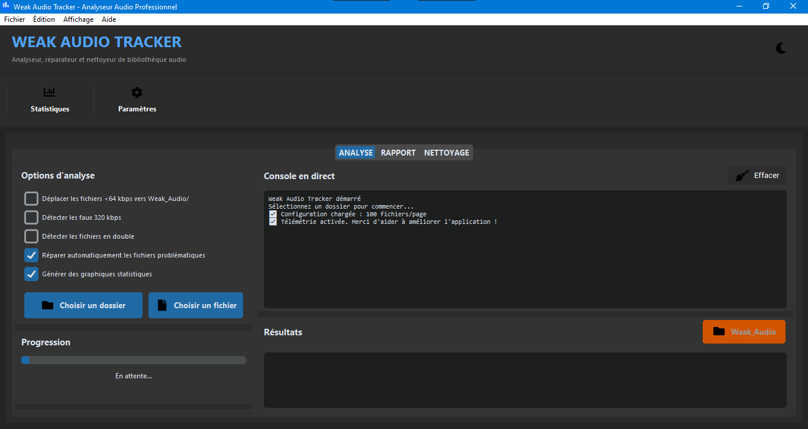
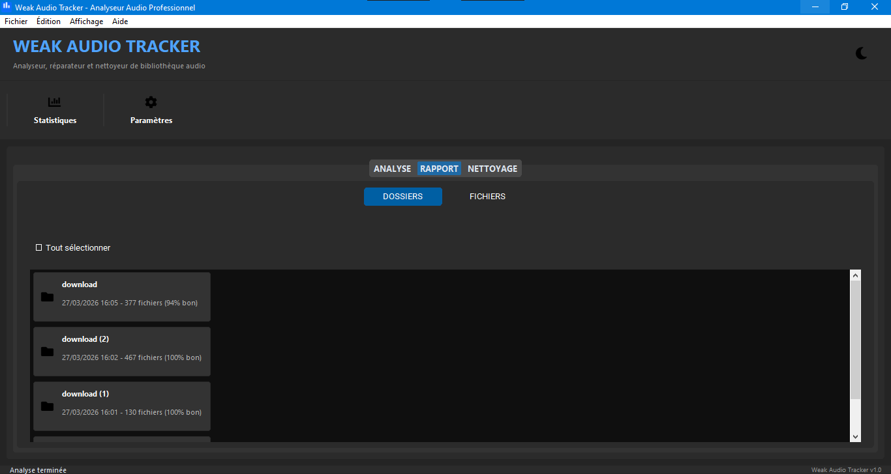
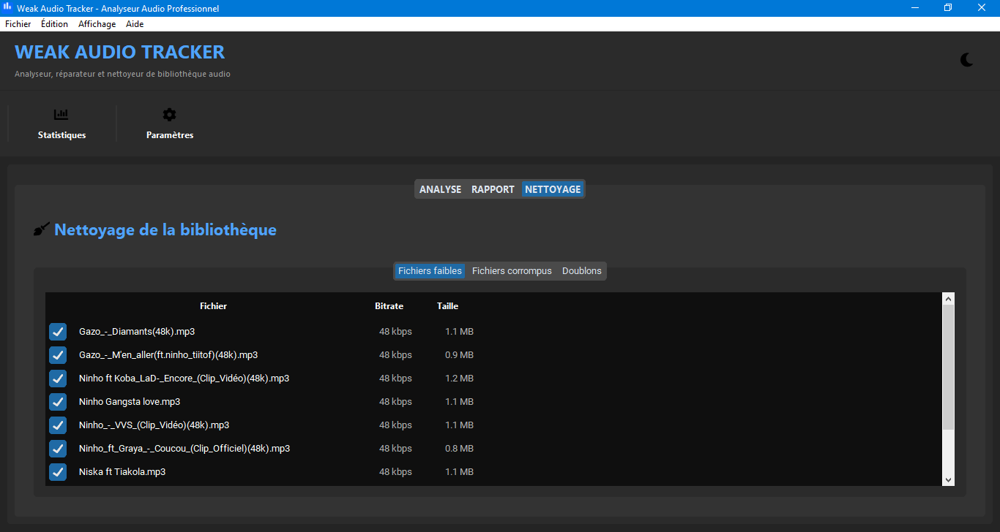

Fonctionnalités
Analyse audio
Scan récursif des dossiers. Support MP3, M4A, FLAC, WAV, OGG, AAC...
Classification
Bonne (≥128 kbps), moyenne (64-127), faible (<64 kbps)
Réparation
Réparation automatique des fichiers corrompus (taux succès ~77%)
Doublons
5 méthodes de détection : exacts, taille, noms, contenu, probables
Rapports
Graphiques camembert et barres. Export HTML et CSV
Nettoyage
Déplace les fichiers faibles, supprime les doublons en un clic
Interface
Mode clair/sombre, icônes vectorielles, console en direct
Confidentialité
Télémétrie anonyme optionnelle. Aucune donnée personnelle
Téléchargement
Linux
Version à venir
Android
Version à venir
Windows
0 téléchargementsLinux
0 (à venir)Android
0 (à venir)Captures d'écran

Onglet Analyse

Onglet Rapport

Onglet Nettoyage
Guide rapide
Téléchargez et décompressez l'archive
Double-cliquez sur WeakAudioTracker.exe
Cliquez sur "Choisir un dossier"
L'analyse démarre automatiquement
Consultez les résultats dans les onglets Rapport et Nettoyage
data/ sera créé automatiquement (contient vos rapports et paramètres).
Confidentialité
Weak Audio Tracker peut collecter des données anonymes (OS, matériel, fonctionnalités utilisées, erreurs) uniquement avec votre consentement.
Aucune donnée personnelle : noms de fichiers, chemins d'accès, contenu audio, adresse IP, informations personnelles.
Vous pouvez refuser au premier démarrage ou modifier votre choix dans les paramètres.